1과목: 디지털 전자회로
1. 평활회로의 기능에 대해 바르게 설명한 것은?
2. 정류회로를 평가하는 파라미터에 해당되지 않는 것은?
3. 다음 주어진 회로는 어떤 종류의 회로인가?
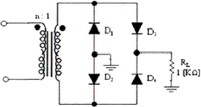
4. 트랜지스터가 정상적으로 동작하기 위해서는 컬렉터(collector)와 베이스(base) 단자 사이의 바이어스는?
5. 공통 베이스(common base) 증폭기 회로에서 컬렉터 전류가 4.9[mA]이고, 에미터 전류가 5[mA]이었을 때 직류전류 증폭율은?
6. 다음 중 증폭기의 종류에 해당되지 않는 것은?
7. 다음 B급 SEPP 증폭기에서 트랜지스터 1개당 최대 전력 손실은 약 몇 [W] 인가?
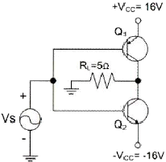
8. 정현파 발진기로서 부적합한 것은?
9. 그림과 같은 발진회로에서 높은 주파수의 동작에 적절한 발진회로 구현을 위한 리액턴스 조건은 무엇인가?
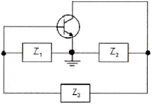
10. 궤환에 의한 발진회로에서 증폭기의 이득을 A, 궤환 회로의 궤환율을 β라고 할 때 발진이 지속되기 위한 조건은?
11. FM 검파 방식 중에서 주파수 변화에 의한 전압 제어 발진기의 제어 신호를 이용하여 복조하는방식은 다음 중 어떤 것인가?
12. 주파수 변조에서 S/N비를 높이기 위한 방법이 아닌 것은?
13. 트랜지스터의 스위칭 작용에 의해서 발생된 펄스 파형에서 턴 오프시간(turn-off time)은 무엇인가?
14. 그림의 회로는 어떤 동작을 하는가?
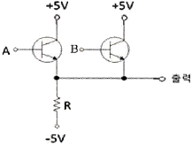
15. 그림과 같은 회로의 출력은?
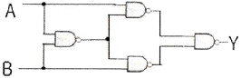
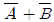
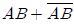
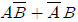
16. 입력 주파수 512[kHz]를 T형 플립플롭 7개를 종속 접속한 회로에 인가했을 때 출력주파수는 얼마인가?
17. 비동기식 카운터의 설명으로 옳지 않은 것은?
18. 플립플롭 4개로 구성된 계수기가 가질 수 있는 최대의 2진 상태는 몇 가지인가?
19. n개의 입력으로부터 2진 정보를 2n개의 독자적인 출력으로 변환이 가능한 것은?
20. 다음 계수형 전자계산기(digital computer)의 기억장치 중 보조기억장치가 아닌 것은?
2과목: 무선통신 기기
21. DSB-TC 변조된 신호의 복조에 관한 설명으로 ㉮,㉯,㉰,㉱의 괄호에 들어갈 내용으로 가장 적당한 것은?
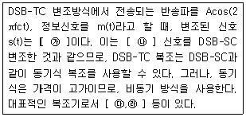
22. 대역폭이 B[Hz]인 기저대역 신호 m(t)를 변조한 SSB 신호의 설명으로 가장 거리가 먼 것은?
23. 슈퍼헤테로다인 방식의 특징 중 틀린 것은?
24. FM 변조에는 직접 FM 변조방식과 간접 FM 변조방식 중 직접 FM 변조방식의 특징이 아닌 것은?
25. 다음 중 수신기의 전기적 성능 고려시 주 대상이 아닌 것은?
26. FM 신호에서 진폭의 변화를 제거하기 위한 방법으로 사용하는 것은?
27. QAM 복조기에서 In-Phase 기준신호가 I성분을 뽑아내는데 사용되는 것은?
28. 다음은 GPS 코드에 대한 설명으로 잘못된 것은?
29. 다음 중 납 축전지에 대한 설명으로 올바른 것은?
30. 축전지에서 백색 황산납 발생의 직접적인 원인이 아닌 것은?
31. 다음 중 무정전 전원장치(UPS) 방식이 아닌 것은?
32. 다음은 브리지형 전파정류회로의 특징으로 올바르지 못한 것은?
33. 전원회로에 관한 설명 중 서로 관계가 먼 것은?
34. 다음은 전력 변환 장치에 대한 설명으로 잘못된 것은?
35. 다음 중 상호변조의 방지대책에 해당되지 않는 것은?
36. 수부하법을 사용한 송신기의 전력측정에서 냉각수 입구측의 온도가 4[℃], 출구측의 온도가 7[℃], 냉각수의 유량이 4[cm3 /sec]일 때 송신기의 전력은 약 몇 [W]인가?
37. BER을 측정하는데 필요하지 않은 것은?
38. 다음 중 스펙트럼 분석기를 이용하여 측정할 수 없는 것은?
39. 10시간 방전율이 50[AH](암페이시)의 용량을 갖는 축전지를 10시간 방전한다고 할 때, 방전전류는 몇 [A]로 사용할 수 있는가?
40. 전원에서 발생되는 전압변동 및 주파수변동 등의 각종 장애로부터 기기를 보호하고 양질의 전원으로 바꿔서 중요 부하에 정전없이 전기를 공급하는 무정전 전원설비를 무엇이라 하는가?
3과목: 안테나 공학
41. 자유공간에서 전파가 20[마이크로초] 동안 전파되었을 때 진행한 거리는 어느 정도인가?
42. 다음 중 전파에 관한 설명으로 맞는 것은?
43. 변화하고 있는 자계는 전계를 발생시키고 또 반대로 변화하고 있는 전계는 자계를 발생시키는 사실을 나타내고 있는 것은?
44. 전압정재파비(VSWR)와 반사계수에 대한 설명으로 맞는 것은?
45. 다음은 동축케이블에 관한 설명으로 틀린 것은?
46. 특성 임피던스가 600[Ω] 및 150[Ω]인 선로를 임피던스 변성기로 정합시키고자 한다. 파장이 λ일 때 삽입해야 할 선로의 특성 임피던스와 길이는?
47. 차단파장 λc=10[cm]인 구형 도파관에 5[GHz]의 전파를 전송할 때 관내파장 λg는 몇 [cm]인가?
48. 다음 중 도파관 내부에 빗물이 침투하였을 때 발생하는 손실은?
49. 주파수 1[MHz] 안테나 전류 10[A]의 수직접지 안테나를 세웠다고 하면 안테나에서 300[km]의 거리의 지점의 전계강도 3[mV/m]를 얻으려면 안테나의 실효고는 얼마가 필요한가?
50. 안테나에 광대역성을 갖게하는 방법으로 틀린 것은?
51. 다이폴의 길이가 λ/10이고, 손실저항이 10[Ω]인 안테나의 효율은 얼마인가?
52. 다음 중 수평편파 dipole 안테나와 수직편파 dipole 안테나의 비교 항목에서 틀린 항목은 어느 것인가? (항목, 수평편파 dipole, 수직편파 dipole)
53. 다음 중 텔레비전 방송의 송신용으로 적당하지 않은 안테나는?
54. 지표파에 대한 설명으로 틀린 것은?
55. 극초단파 대역의 신호를 사용하여 200~1500[km] 정도 떨어져 있는 두 지점간에 통신을 할 때 주로 사용하는 전파는?
56. 라디오 덕트에 대한 설명으로 틀린 것은?
57. 선박용 레이더에서 마이크로파를 사용하는 이유로 틀린 것은?
58. 다음 중 전리층의 높이가 지상 약 100[km] 정도로 발생지역과 장소가 불규칙한 전리층은?
59. 지상파와 공간파가 간섭을 일으키면 어떤 현상이 일어나는가?
60. 공전잡음을 줄이기 위한 방법으로 적절하지 않은 것은?
4과목: 무선통신 시스템
61. 주파수 145[MHz]용 트랜시버에 있는 HIGH/LOW 스위치는 어느 경우에 사용하는 것인가?
62. 슈퍼헤테로다인 수신기에서 중간주파수를 낮게 선정할 때의 장점에 해당되지 않는 것은?
63. PLL에 대한 설명으로 잘못된 것은?
64. 검파 중계방식에 대한 설명으로 잘못된 것은?
65. 기지국 통화량 분산을 위하여 필요한 최적화 작업이 아닌 것은?
66. CDMA 시스템에서 발생하는 근거리/원거리 문제(Near-far problem)에 대한 설명으로 옳은 것은?
67. CDMA 통신에서의 순방향 채널 구성 요소로 맞게 나열된 것은?
68. 저전력 근거리 무선통신 방식 중에서 초광대역 전파(GHz 대)를 이용하여 10[m]~20[m]의 거리에서 수 100[Mbps]를 전송하는 방식은?
69. 다음 중 RFID에 대한 설명으로 틀린 것은 무엇인가?
70. 다음 중 통신 프로토콜에 대한 개념으로 가장 옳은 것은?
71. 다음 중 상위의 계층에서 주어진 정보를 공통으로 이해할 수 있는 표현 형식으로 변환하는 기능을 제공하는 계층은?
72. OSI 참조모델에서의 컴퓨터 네트워크의 요소가 아닌 것은?
73. 위성통신에서 각 지구국에 채널을 할당하는 방식이 아닌 것은?
74. OSI 참조 모델의 각 계층과 그에 해당하는 역할을 잘못 짝지은 것은?
75. 다음 중 하위 계층의 기능을 이용하여 종단점간(end-to-end)에 신뢰성 있는 데이터 전송을 수행하기 위해 종단점간의 오류 복원과 흐름 제어를 수행하는 계층은?
76. 데이터 전송률을 54[Mbps]까지 올리는 802.11a 무선랜의 물리계층에서 사용하는 전송방식은?
77. 이득이 10[dB]이고 잡음지수가 8[dB]인 증폭기 후단에 잡음지수가 12[dB]인 증폭기가 있는 경우 종합잡음지수는 얼마인가?
78. 통신시스템이 고장이 난 시점부터 그 다음 고장이 나는 시점까지의 평균시간을 무엇이라고 하는가?
79. 지정된 공중선 전력을 400[W]로 하고 허용편차를 상한 10[%], 하한 5[%]로 하면 전파를 발사할 경우에 허용되는 공중선전력의 범위는?
80. 다음 중 802.1x 인증프레임워크와 관련이 없는 것은?
5과목: 전자계산기 일반 및 무선설비기준
81. 이진수를 1의 보수로 표현하는 컴퓨터가 있다. 연산 중 negate(피연산자의 부호 변경) 연산과 같은 것은 무엇인가?
82. 화소(Pixel)의 색상을 나타내기 위하여 RGB(Red, Green, Blue)로 표현하고 있다. 한 화소의 색상을 각 색상(R, G, B)마다 256가지로 분류를 한다면 한 화소에 대한 저장장소는 얼마가 필요하며 나타낼 수 있는 색상은 몇 가지인가?
83. 다중프로그래밍(multiprogramming)을 위하여 시스템이 갖추어야 할 것 중 관계가 가장 적은 것은?
84. 자원을 효율적으로 관리하기 위한 운영체제의 추가관리기능들로 올바르게 나열된 것은?
85. 다음 지문에서 설명하고 있는 소프트웨어의 종류는?
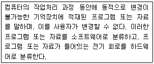
86. 마이크로프로세서로 구성된 중앙처리장치는 명령어의 구성방식에 따라 2가지로 나누어 볼 수 있는데, 이 중 연산속도를 높이기 위해 처리할 수 있는 명령어의 수를 줄였으며 단순화된 명령 구조로 속도를 최대한 높일 수 있도록 한 것은?
87. 다음 지문에 들어갈 내용으로 알맞은 용어끼리 짝지어진 것을 고르시오.
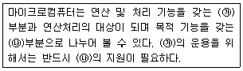
88. 다음 지문에 해당하는 것은?
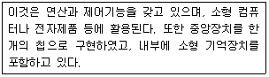
89. 마이크로프로세서를 구성하는 요소 장치로 데이터 처리과정에서 필수적으로 요구되는 것끼리 올바르게 짝지어진 것은?
90. 다음의 그림은 CPU의 기능 블록도를 나타낸 것이다. 빈칸에 들어갈 용어는?
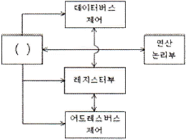
91. 무선국의 허가 신청 단위는? (단, 휴대용 무선기기는 제외)
92. 다음 중 전파법상 무선국의 분류에 있어서 방송국으로 분류하고 있지 않은 것은?
93. 데이터 및 통신메시지의 입력ㆍ출력ㆍ저장ㆍ검색ㆍ전송 또는 제어 등의 주요기능과 정보 전송용으로 작동되는 1개 이상의 터미널 포트를 갖춘 기기로서 600볼트 이하의 공급 전압을 가진 기기의 정의로 가장 가까운 것은?
94. 적합성 평가를 받은 자에게 사후관리 대상기자재의 제출을 요구할 경우에 반입 수량은 몇 대까지로 하는가?
95. 다음 중 “전자파적합성평가” 대상기자재가 아닌 것은?
96. 초단파 방송국에서 송신장치의 신호대잡음비는 1000[Hz]의 변조주파수에서 최대 주파수편이를 한 경우 얼마 이상이 되어야 하는가?
97. 다음 중 평균전력을 나타내는 기호는?
98. 모노포닉 방송을 하는 AM 방송용 무선설비의 송신장치는 몇 [%]까지 직선적으로 변조할 수 있어야 하는가?
99. 송신설비의 전력은 주로 무엇으로 표시하는가?(관련 규정 개정전 문제로 여기서는 기존 정답인 3번을 누르면 정답 처리됩니다. 자세한 내용은 해설을 참고하세요.)
100. 선박운항 해역을 4가지로 구분하는데, 다음 중 A2 해역이라 함은 어떤 것을 의미하는가?